Corrigés annotés : Audi 4Motion, Quille pendulaire, Survitesse d'ascenseur
Les résultats sont ceux des corrigés d'E. Bigeard (S2I), réexpliqués étape par étape. Les passages marqués « ajout » ne viennent pas du corrigé, tout comme les explications « Pourquoi » et « Sens physique ». Les coquilles repérées sont signalées en rouge.
La méthode commune aux trois exercices
- Lire le schéma : une pièce après l'autre, et le paramètre de chaque liaison.
- Cinématique : relier toutes les vitesses.
- Énergie cinétique : translation et rotation de chaque pièce.
- Puissances : extérieures, puis intérieures. Liaison parfaite : zéro.
- Théorème de l'énergie cinétique : on dérive, on égale, on isole l'inconnue.
- Si on cherche une action dans un cas précis, on isole et on écrit le théorème du moment dynamique sur le bon axe (ascenseur, Q3).
Bases manquantes : boîte à outils C03-C04.
1. Transmission de puissance Audi 4Motion
- énergie cinétique de tout ce qui bouge (Q1 à Q4) ;
- tout ramener à une seule vitesse, d'où une inertie équivalente (Q5, Q6) ;
- puissances extérieures puis intérieures (Q7 à Q9) ;
- théorème de l'énergie cinétique, d'où le couple (Q10 à Q13).
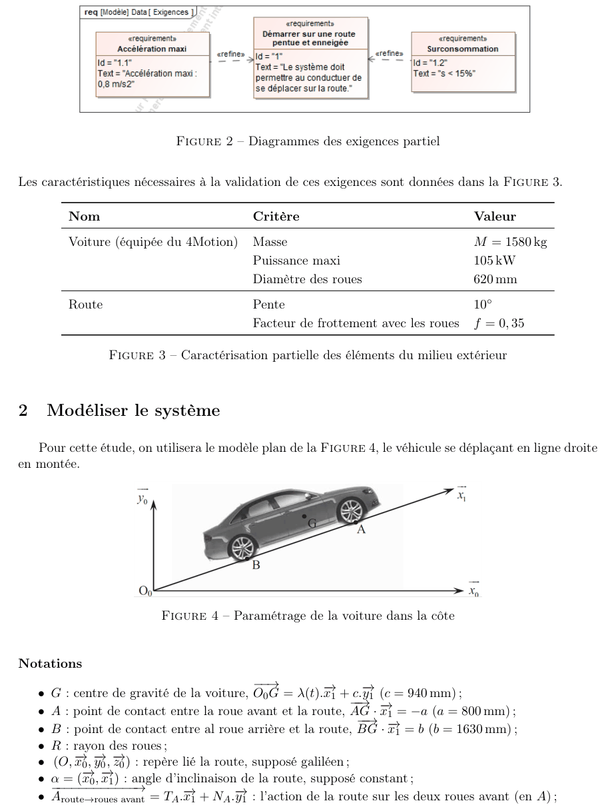
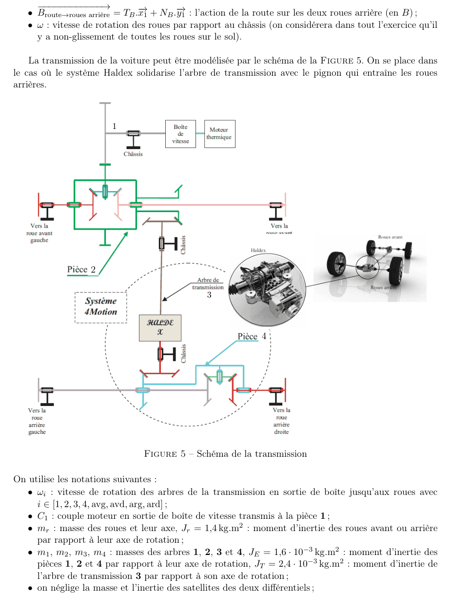
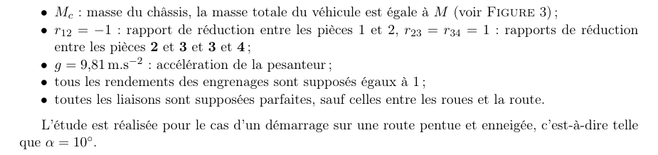
Avant de commencer : lire le schéma. Une couleur correspond à une pièce. On suit la puissance :
- moteur, boîte de vitesse, puis arbre gris (1) ;
- engrenage vers le boîtier vert (2) du différentiel avant, qui entraîne les roues avant (orange et rose) ;
- le boîtier 2 entraîne aussi, par un renvoi conique, l'arbre kaki (3) ;
- coupleur Haldex (bloqué ici), puis pignon rouge foncé ;
- boîtier cyan (4) du différentiel arrière, qui entraîne les roues arrière (violet et rouge vif).
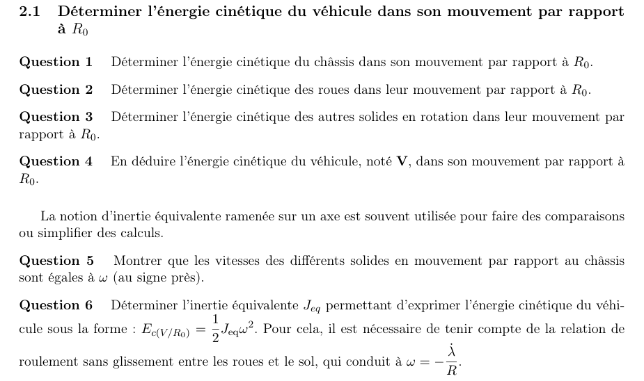
Question 1 : énergie cinétique du châssis
Étape 1 : identifier le mouvement
Le châssis ne tourne pas : il est en translation. Sa vitesse se lit sur le paramétrage \(\overrightarrow{O_0G}=\lambda(t)\,\vec x_1+c\,\vec y_1\). Les vecteurs et \(c\) sont constants, donc \(\vec V=\dot\lambda\,\vec x_1\).
Étape 2 : garder les termes utiles
Translation : \(\vec\Omega=\vec 0\). Il ne reste que le premier terme.
Question 2 : énergie cinétique d'une roue
Étape 1 : identifier le mouvement
Une roue avance avec la voiture et tourne sur elle-même. Son centre de gravité est sur son axe, donc il va à la même vitesse que la voiture, \(\dot\lambda\).
Étape 2 : les deux termes
Question 3 : énergie cinétique des arbres 1, 2, 3 et 4
Même raisonnement : chaque arbre tourne autour d'un axe fixe par rapport au châssis, qui avance à \(\dot\lambda\).
Question 4 : énergie cinétique du véhicule V
Étape 1 : additionner (4 roues, 4 arbres, le châssis)
L'énergie d'un ensemble est la somme des énergies. Les satellites sont négligés.
\[\begin{aligned}E_c(V/R_0)&=\tfrac12\big(M_c+4m_r+m_1+m_2+m_3+m_4\big)\dot\lambda^2\\&\quad+\tfrac12\big(4J_r\omega^2+J_E(\omega_1^2+\omega_2^2+\omega_4^2)+J_T\omega_3^2\big)\end{aligned}\]Étape 2 : reconnaître la masse totale
La première parenthèse est la masse totale \(M=1580\) kg.
Question 5 : toutes les vitesses de rotation valent ω, au signe près
Étape 1 : le différentiel avant en ligne droite
En ligne droite, les deux roues avant tournent à la même vitesse \(\omega\). Donc \(2\omega=2\omega_2\), soit \(\omega_2=\omega\). Les satellites ne tournent pas sur eux-mêmes : tout le différentiel tourne en bloc.
Étape 2 : propager avec les rapports donnés
- \(r_{23}=1\) donne \(\omega_3=\omega\) ;
- \(r_{34}=1\) (Haldex bloqué) donne \(\omega_4=\omega\) ;
- \(r_{12}=-1\) donne \(\omega_1=-\omega\).
Le différentiel arrière vérifie bien la même relation : \(\omega_{arg}=\omega_{ard}=\omega_4=\omega\).
Question 6 : inertie équivalente
Étape 1 : roulement sans glissement
\[\omega=-\dfrac{\dot\lambda}{R}\quad\Longrightarrow\quad\dot\lambda^2=R^2\omega^2\]Étape 2 : tout écrire avec ω et mettre ω² en facteur
\[E_c=\tfrac12\big(MR^2+4J_r+3J_E+J_T\big)\,\omega^2\]Étape 3 : application numérique (R = 0,620 / 2 = 0,31 m)
\[J_{eq}=1580\times0{,}31^2+4\times1{,}4+3\times1{,}6\cdot10^{-3}+2{,}4\cdot10^{-3}\] \[J_{eq}=151{,}84+5{,}6+0{,}0048+0{,}0024\approx157{,}4\ \text{kg·m}^2\]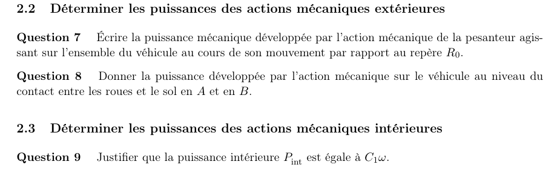
Question 7 : puissance de la pesanteur
Étape 1 : les deux torseurs au point G
Le poids est \(\vec R=-Mg\,\vec y_0\), sans moment en G. La vitesse est \(\dot\lambda\,\vec x_1\).
Étape 2 : produit scalaire
\(\vec x_1\) fait l'angle \(\alpha\) avec l'horizontale \(\vec x_0\), donc \(\vec y_0\cdot\vec x_1=\sin\alpha\).
\[P_{pes}=-Mg\sin\alpha\,\dot\lambda\]Étape 3 : écrire avec ω
Question 8 : puissance de la route en A et en B
Étape 1 : vitesse du point de contact
Il y a roulement sans glissement : la matière de la roue située au point de contact a une vitesse nulle par rapport au sol.
Étape 2 : comoment en A
\[P=\big(T_A\,\vec x_1+N_A\,\vec y_1\big)\cdot\vec V_{A\in roue/R_0}+\vec 0\cdot\vec\Omega=0\]Question 9 : la puissance intérieure vaut C₁ω
Étape 1 : lister ce qui est intérieur au véhicule
- Les liaisons entre pièces sont parfaites : puissance nulle.
- Les rendements des engrenages valent 1 : aucune perte.
- Il reste l'action motrice qui entraîne la pièce 1.
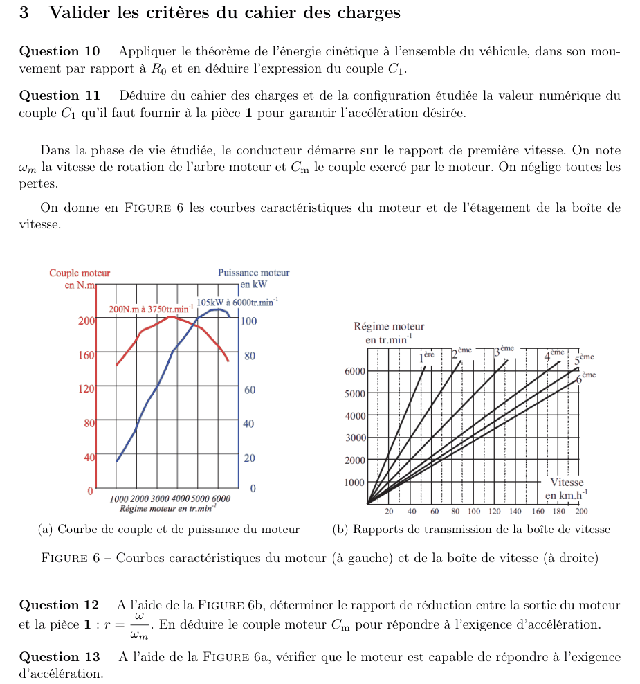
Question 10 : théorème de l'énergie cinétique, expression de C₁
Étape 1 : dériver l'énergie
\[\dfrac{d}{dt}\Big(\tfrac12 J_{eq}\,\omega^2\Big)=J_{eq}\,\omega\,\dot\omega\]Étape 2 : écrire les puissances (Q7, Q8, Q9)
\[J_{eq}\,\omega\,\dot\omega=MgR\sin\alpha\,\omega+0+C_1\,\omega\]Étape 3 : simplifier par ω et isoler C₁
\[C_1=J_{eq}\,\dot\omega-MgR\sin\alpha\]Étape 4 : revenir à l'accélération de la voiture, avec \(\dot\omega=-\ddot\lambda/R\)
Question 11 : valeur numérique de C₁
Étape 1 : chercher les données
Exigence 1.1 : \(\ddot\lambda=0{,}8\) m/s². Pente : \(\alpha=10^\circ\).
Étape 2 : calculer chaque terme séparément
- accélération : \(\dfrac{157{,}4}{0{,}31}\times0{,}8\approx406\) N·m ;
- pente : \(1580\times9{,}81\times0{,}31\times\sin10^\circ\approx835\) N·m.
Question 12 : rapport de réduction et couple moteur
Étape 1 : lire un point sur la droite de 1re vitesse (figure 6b)
À 6000 tr/min, la voiture roule à environ 50 km/h.
Étape 2 : convertir en unités SI
\[\omega_m=\dfrac{2\pi\times6000}{60}=628{,}3\ \text{rad/s}\qquad V=\dfrac{50}{3{,}6}=13{,}9\ \text{m/s}\]Étape 3 : rapport, avec \(|\omega|=V/R\)
\[r=\dfrac{V}{R\,\omega_m}=\dfrac{13{,}9}{0{,}31\times628{,}3}\approx0{,}071\]Étape 4 : conserver la puissance (aucune perte)
\[C_m\,\omega_m=|C_1\,\omega|\quad\Longrightarrow\quad C_m=r\,|C_1|\]Question 13 : le moteur est-il capable ?
Étape 1 : lire la courbe de couple (figure 6a, en rouge)
Dès 1000 tr/min, le moteur fournit environ 145 N·m, et jusqu'à 200 N·m à 3750 tr/min.
Étape 2 (ajout) : contrôle en puissance à 50 km/h
\[P=|C_1|\times\dfrac{V}{R}=1241\times44{,}8\approx55{,}6\ \text{kW}<105\ \text{kW}\]Étape 3 (ajout, hors sujet posé) : pourquoi quatre roues motrices ?
L'effort de traction nécessaire est \(T=M(\ddot\lambda+g\sin\alpha)\approx3956\) N, pour un coefficient de frottement \(f=0{,}35\).
- 4 roues motrices : \(f\,Mg\cos\alpha\approx5340\) N disponibles. Cela suffit.
- Roues avant seules : le PFD donne \(N_A\approx8710\) N sur l'avant, soit \(f\,N_A\approx3050\) N. Les roues patinent.
C'est un ordre de grandeur : on néglige l'inertie des roues et on suppose que le système répartit bien l'effort entre les deux essieux.
2. Quille pendulaire
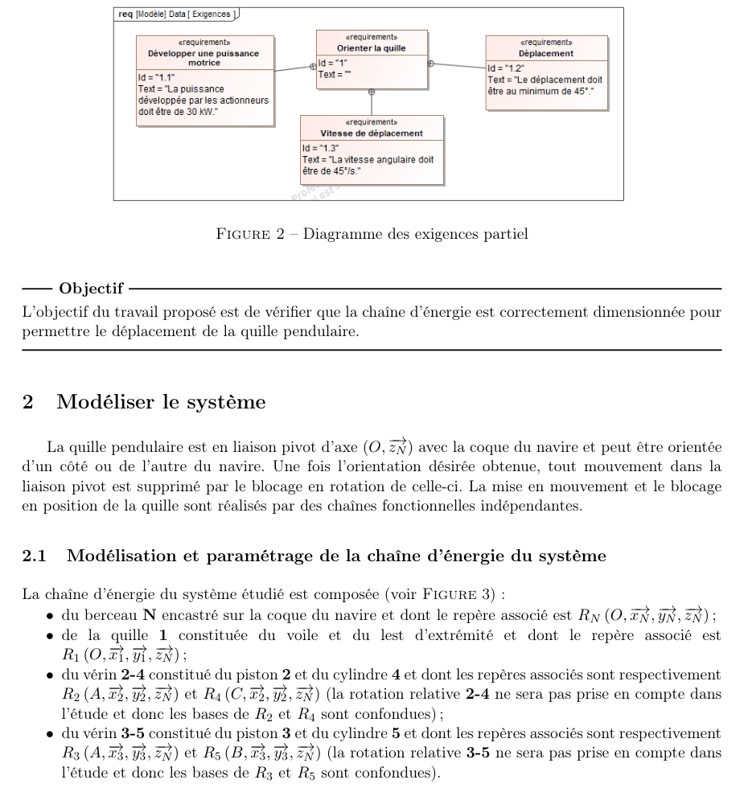
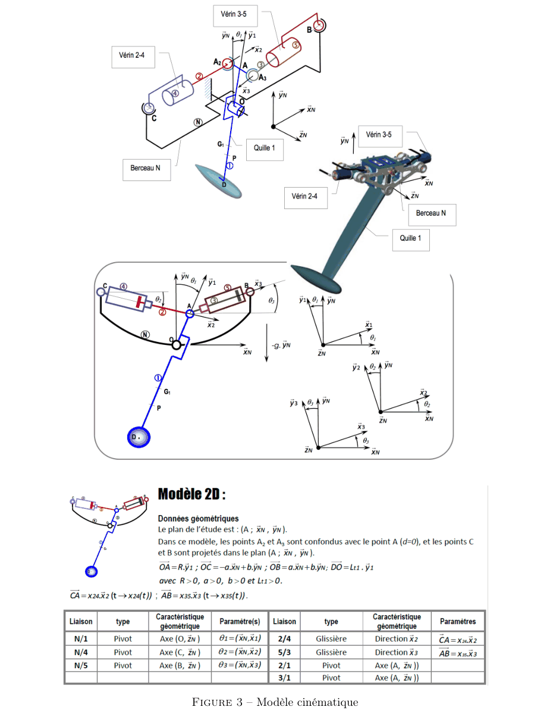
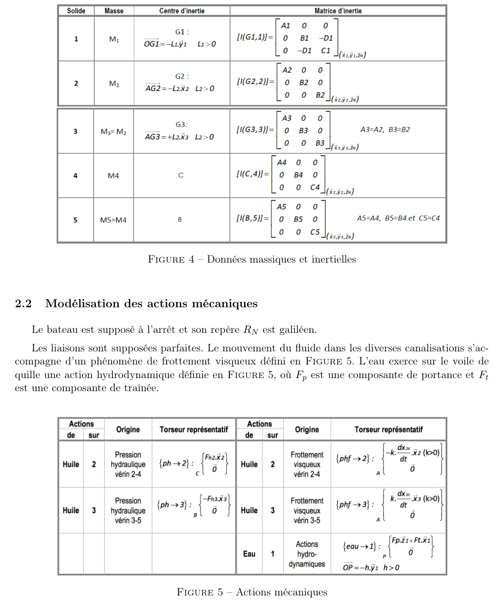
Lire le schéma. On travaille sur le modèle 2D.
- N (noir) : berceau fixé au bateau, c'est le bâti.
- 1 (bleu) : la quille, en pivot en O avec N, d'angle \(\theta_1\).
- Vérin de gauche : corps 4 (violet) en pivot en C, tige 2 (rouge) en pivot en A sur la quille. La longueur \(CA=x_{24}\) varie.
- Vérin de droite : corps 5 (rouge foncé) en pivot en B, tige 3 (verte) en pivot en A. La longueur \(AB=x_{35}\) varie.
- 2 et 4 ont le même angle \(\theta_2\) ; 3 et 5 le même angle \(\theta_3\).
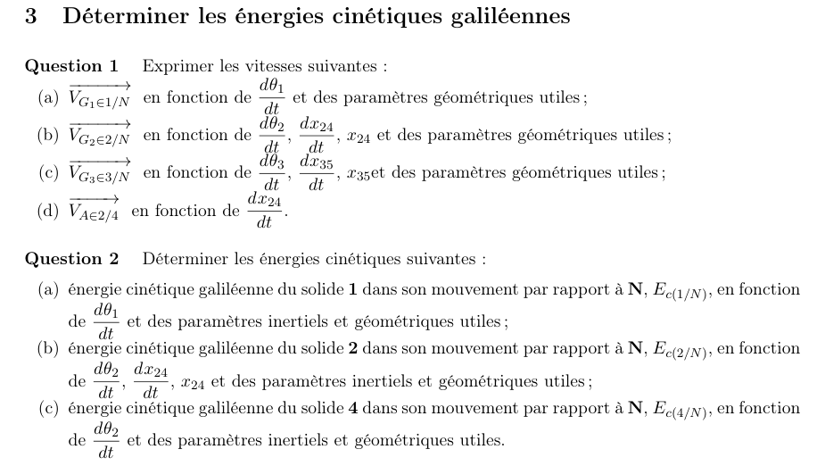
Question 1 a) : vitesse de G₁
Étape 1 : partir d'un point fixe
O est fixe dans N et \(\overrightarrow{OG_1}=-L_1\,\vec y_1\). La vitesse de \(G_1\) est la dérivée de ce vecteur.
Étape 2 : dériver
\[\vec V_{G_1\in1/N}=-L_1\Big[\dfrac{d\vec y_1}{dt}\Big]_N\]Question 1 b) : vitesse de G₂
Étape 1 : construire le vecteur depuis le point fixe C
\[\overrightarrow{CG_2}=\overrightarrow{CA}+\overrightarrow{AG_2}=x_{24}\,\vec x_2-L_2\,\vec x_2=(x_{24}-L_2)\,\vec x_2\]Étape 2 : dériver un produit (la longueur ET la direction varient)
Question 1 c) : vitesse de G₃
Étape 1 : partir du point fixe B
\(\overrightarrow{AB}=x_{35}\,\vec x_3\), donc \(\overrightarrow{BA}=-x_{35}\,\vec x_3\). De plus \(\overrightarrow{AG_3}=+L_2\,\vec x_3\).
\[\overrightarrow{BG_3}=(L_2-x_{35})\,\vec x_3\]Étape 2 : dériver
Question 1 d) : vitesse de A, de 2 par rapport à 4
Vu depuis le corps 4, la direction \(\vec x_2\) ne bouge pas. Seule la longueur change.
Question 2 a) : énergie cinétique de la quille 1
Étape 1 : choisir le bon moment d'inertie
La matrice est donnée en \(G_1\). La rotation est autour de \(\vec z_N\) : on prend le terme de la 3e ligne, 3e colonne, soit \(C_1\).
Étape 2 : remplacer la vitesse
On reconnaît le théorème de Huygens : \(C_1+M_1L_1^2\) est le moment d'inertie par rapport à l'axe (O, z).
Question 2 b) : énergie cinétique de la tige 2
Étape 1 : carré de la vitesse (deux composantes perpendiculaires)
\[\vec V_{G_2}^{\,2}=\dot x_{24}^2+(x_{24}-L_2)^2\dot\theta_2^2\]Étape 2 : moment d'inertie autour de z : c'est \(B_2\)
Question 2 c) : énergie cinétique du corps 4
Le corps 4 tourne autour de l'axe fixe (C, z). Sa matrice est donnée en C, et il a le même angle \(\theta_2\) que la tige.
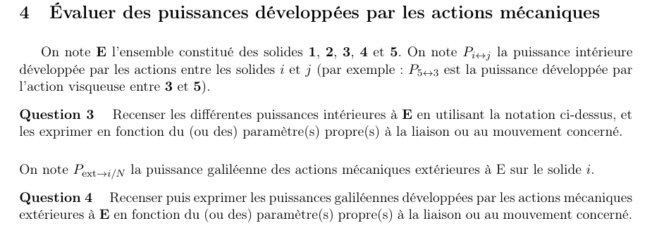
Question 3 : puissances intérieures à E = {1, 2, 3, 4, 5}
Étape 1 : éliminer les liaisons parfaites
\[P_{1\leftrightarrow2}=P_{1\leftrightarrow3}=P_{3\leftrightarrow5}=P_{2\leftrightarrow4}=0\]Étape 2 : lister ce qui reste
Dans chaque vérin il y a la pression d'huile (ph) et le frottement visqueux (phf).
Étape 3 : vérin 2-4, avec \(\vec V_{2/4}=\dot x_{24}\,\vec x_2\)
- pression : \(P^{ph}_{4\leftrightarrow2}=F_{h2}\,\dot x_{24}\)
- frottement : \(P^{phf}_{4\leftrightarrow2}=-k\,\dot x_{24}^2\)
Étape 4 : vérin 3-5, avec \(\vec V_{A\in3/5}=-\dot x_{35}\,\vec x_3\)
- pression : \(P^{ph}_{5\leftrightarrow3}=(-F_{h3}\vec x_3)\cdot(-\dot x_{35}\vec x_3)=F_{h3}\,\dot x_{35}\)
- frottement : \(P^{phf}_{5\leftrightarrow3}=(k\dot x_{35}\vec x_3)\cdot(-\dot x_{35}\vec x_3)=-k\,\dot x_{35}^2\)
Question 4 : puissances extérieures
Étape 1 : inventaire
- liaisons parfaites avec le bâti N (en O, C et B) : puissance nulle ;
- pesanteur sur 1 à 5 ;
- action de l'eau sur la quille 1.
Étape 2 : l'eau, appliquée en P avec \(\overrightarrow{OP}=-h\,\vec y_1\)
Comme pour \(G_1\), \(\vec V_{P\in1/N}=h\,\dot\theta_1\,\vec x_1\). La force est \(F_p\,\vec z_N+F_t\,\vec x_1\) ; \(\vec z_N\) est perpendiculaire à \(\vec x_1\).
Étape 3 : poids des pièces mobiles, \(P=-M g\,\vec y_N\cdot\vec V_G\)
On utilise \(\vec y_N\cdot\vec x_i=\sin\theta_i\) et \(\vec y_N\cdot\vec y_i=\cos\theta_i\).
Les centres de gravité de 4 (en C) et de 5 (en B) sont fixes : leur poids ne fournit aucune puissance.
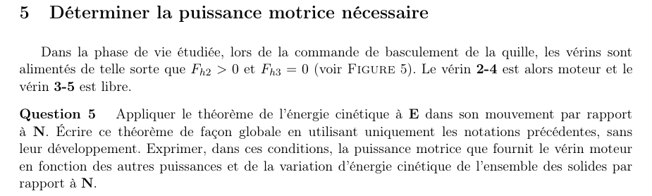
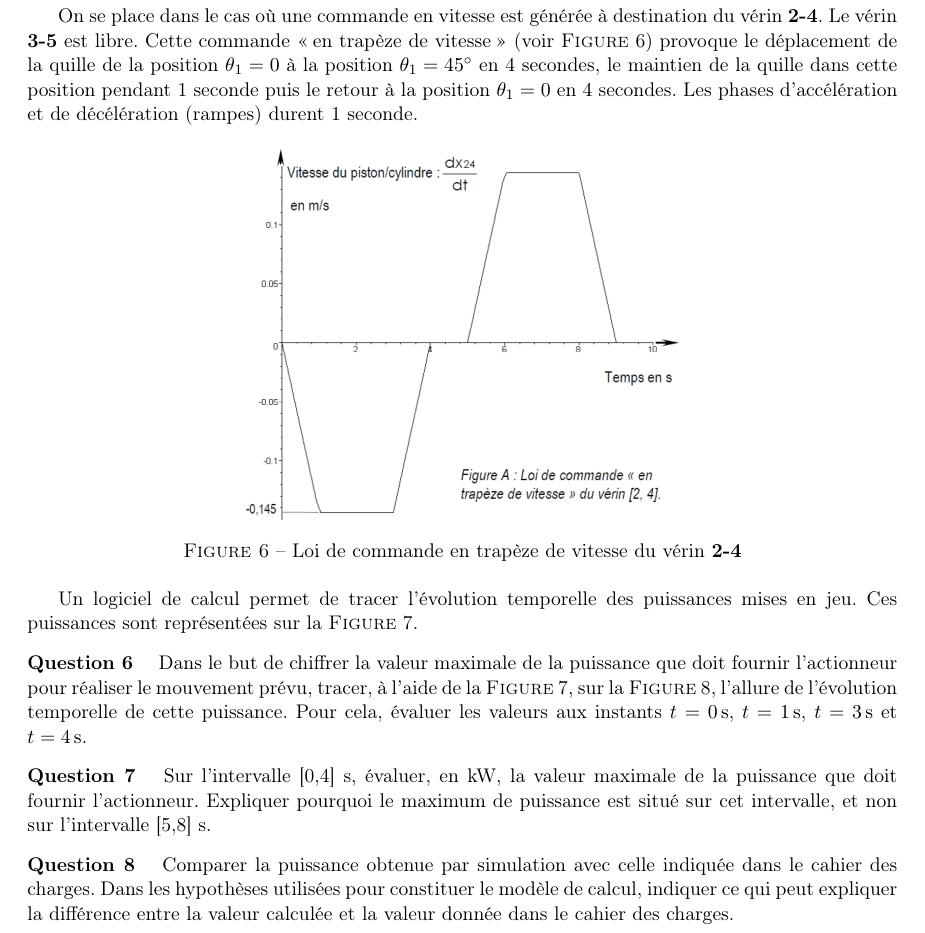
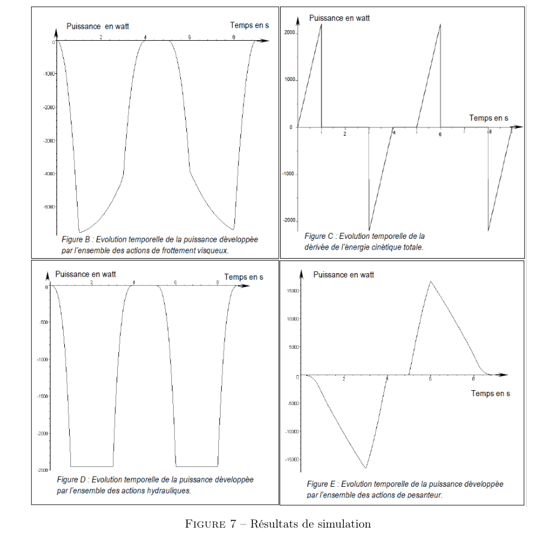
Question 5 : théorème de l'énergie cinétique
Étape 1 : écrire le théorème sur E
\[\dfrac{dE_c(E/N)}{dt}=P_{ext}+P_{int}\]Étape 2 : identifier le moteur
\(F_{h2}>0\) : le vérin 2-4 est moteur, \(P_{mot}=P^{ph}_{4\leftrightarrow2}\). \(F_{h3}=0\) : le vérin 3-5 est libre, donc \(P^{ph}_{5\leftrightarrow3}=0\).
Étape 3 : isoler la puissance motrice
Question 6 : valeurs à 0, 1, 3 et 4 s, et allure de la courbe
Étape 1 : savoir quelle courbe lire (figure 7)
- B : frottements visqueux, négatif ;
- C : dérivée de l'énergie cinétique ;
- D : intitulée « actions hydrauliques ». Elle correspond à l'action de l'eau sur la quille (négative, donc résistante) ; ce n'est pas le vérin moteur ;
- E : pesanteur.
Étape 2 : lire les valeurs et appliquer la formule
Les puissances B, D et E sont négatives : le « moins » devant la parenthèse les fait s'ajouter.
| t (s) | dEc/dt (W) | − B (W) | − D (W) | − E (W) | P motrice (W) |
|---|---|---|---|---|---|
| 0 | 0 | 0 | 0 | 0 | 0 |
| 1 | 2200 | 5800 | 2500 | 4000 | 14 500 |
| 3 | 0 | 4000 | 2500 | 16 000 | 22 500 |
| 4 | 0 | 0 | 0 | 0 | 0 |
Question 7 : puissance maximale sur [0 ; 4] s
Pourquoi sur cet intervalle ? De 0 à 4 s, on écarte la quille de la verticale : on remonte son lest, le poids s'oppose au mouvement (courbe E négative). De 5 à 8 s, la quille revient : le poids aide (courbe E positive). Le vérin a alors beaucoup moins à fournir.
Question 8 : comparaison avec le cahier des charges
L'exigence 1.1 indique 30 kW. L'écart avec la simulation est de 7,5 kW.
Explications proposées par le corrigé : marge de sécurité, incertitudes sur les actions de l'eau, usure. L'hypothèse des liaisons parfaites ne suffit pas à elle seule à expliquer un tel écart.
3. Survitesse d'ascenseur
- Le limiteur de vitesse (Q1 à Q6) : à quelle vitesse la sécurité se déclenche-t-elle ? On utilise le moment dynamique.
- Le volant d'inertie du treuil (Q7 à Q12) : quelle inertie pour ne pas dépasser 0,5 m/s² ? On utilise le théorème de l'énergie cinétique.
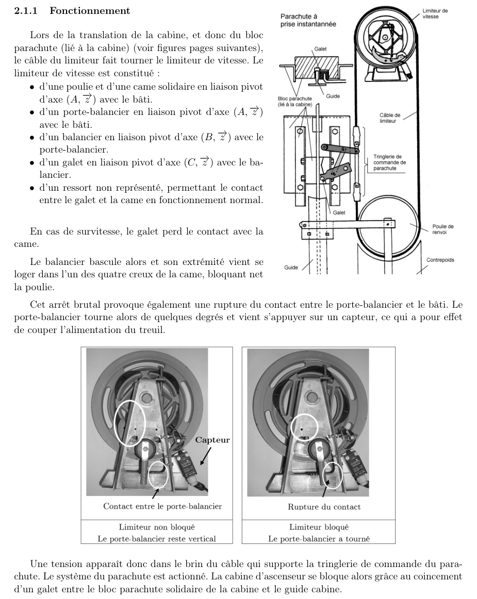
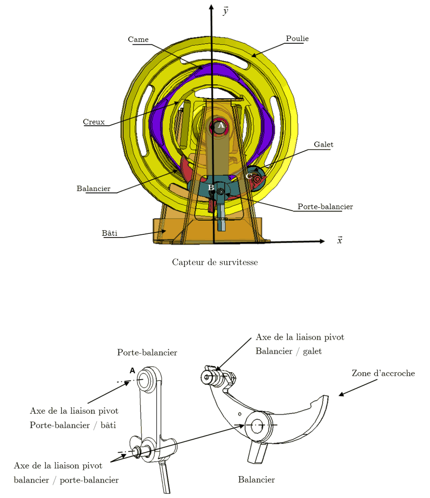
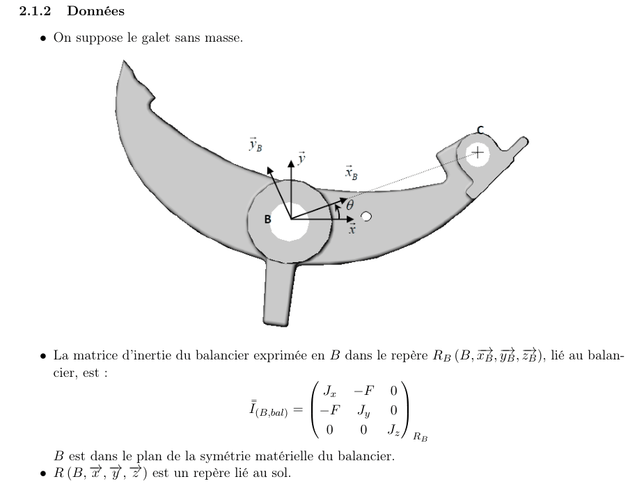
Le principe en mots simples.
- La cabine entraîne par un câble la poulie du limiteur, solidaire de la came (violette).
- Le galet roule sur la came : les bosses font osciller le balancier.
- Un ressort maintient le galet contre la came.
- Si la came tourne trop vite, le ressort n'arrive plus à faire suivre les bosses : le galet décolle. Le balancier part trop loin, se loge dans un creux et bloque la poulie. Le parachute arrête alors la cabine.
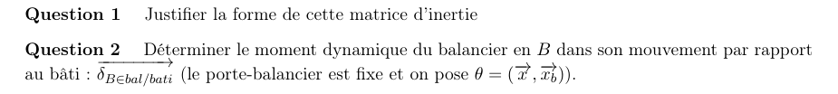
Question 1 : justifier la forme de la matrice
Étape 1 : repérer le plan de symétrie
Le plan \((B,\vec x_B,\vec y_B)\) est un plan de symétrie : à chaque masse à la cote \(+z\) correspond une masse à la cote \(-z\).
Étape 2 : conclure
Les intégrales qui contiennent \(z\) une seule fois se compensent.
Question 2 : moment dynamique du balancier en B
Étape 1 : vérifier la condition sur B
Le porte-balancier est fixe, donc B est un point fixe du balancier.
Étape 2 : moment cinétique, avec \(\vec\Omega=\dot\theta\,\vec z\)
\(\vec\Omega\) n'a qu'une composante sur \(z\) : on lit la 3e colonne de la matrice.
\[\vec\sigma_B=J_z\,\dot\theta\,\vec z\]Étape 3 : dériver (\(\vec z\) est fixe)
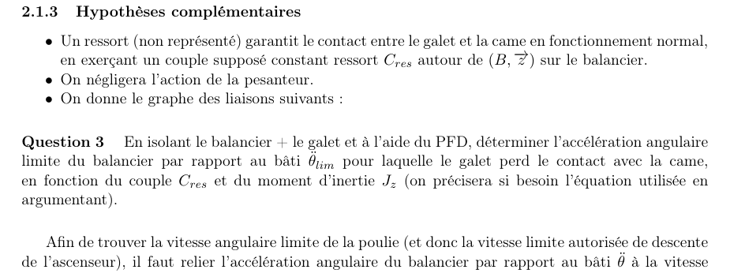
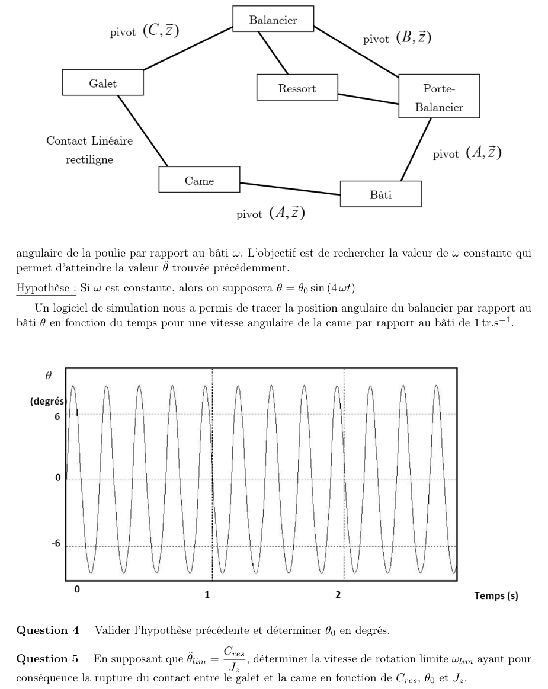
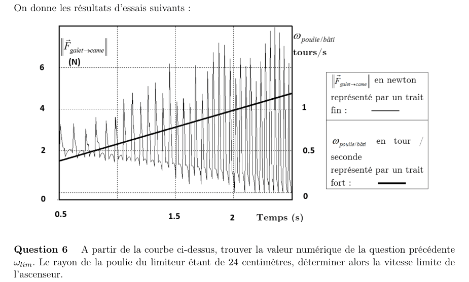
Question 3 : accélération angulaire limite
Étape 1 : isoler
On isole E = {balancier, galet}. Le galet est sans masse.
Étape 2 : inventaire des actions extérieures
- came sur galet : sa résultante devient nulle au moment du décollement ;
- porte-balancier sur balancier : pivot d'axe (B, z), donc moment nul sur z ;
- ressort : couple \(C_{res}\) autour de (B, z) ;
- pesanteur : négligée.
Étape 3 : choisir l'équation
On ne veut pas les inconnues de la liaison en B. On écrit donc le théorème du moment dynamique en B, projeté sur \(\vec z\).
\[\sum\vec M_B(\text{ext}\to E)\cdot\vec z=\vec\delta_B\cdot\vec z\] \[C_{res}=J_z\,\ddot\theta_{lim}\]Question 4 : valider l'hypothèse et trouver θ₀
Étape 1 : compter les périodes
La came tourne à 1 tr/s. On compte 4 oscillations complètes par seconde : la fréquence est 4 Hz.
Étape 2 : comparer avec le modèle
À 1 tr/s, \(\omega=2\pi\) rad/s, donc \(4\omega=8\pi\) rad/s. Cela correspond bien à \(8\pi/(2\pi)=4\) Hz. La courbe est une sinusoïde centrée sur 0.
Étape 3 : lire l'amplitude
Question 5 : vitesse de rotation limite
Étape 1 : dériver deux fois \(\theta=\theta_0\sin(4\omega t)\)
\[\dot\theta=4\omega\,\theta_0\cos(4\omega t)\] \[\ddot\theta=-16\,\omega^2\theta_0\sin(4\omega t)\]Étape 2 : prendre le maximum en valeur absolue
\[|\ddot\theta|_{max}=16\,\omega^2\theta_0\]Étape 3 : égaler à la limite de la question 3
\[16\,\omega_{lim}^2\,\theta_0=\dfrac{C_{res}}{J_z}\]Question 6 : valeur de ω limite et vitesse de la cabine
Étape 1 : chercher quand le contact est perdu
Sur l'essai, le bas des oscillations de l'effort galet-came (trait fin) atteint zéro vers t = 2 s.
Étape 2 : lire la vitesse au même instant (trait épais, échelle de droite)
\(\omega_{lim}\approx1\) tr/s.
Étape 3 : convertir et calculer la vitesse, avec R = 0,24 m
\[V_{lim}=R\,\omega=0{,}24\times2\pi\times1\]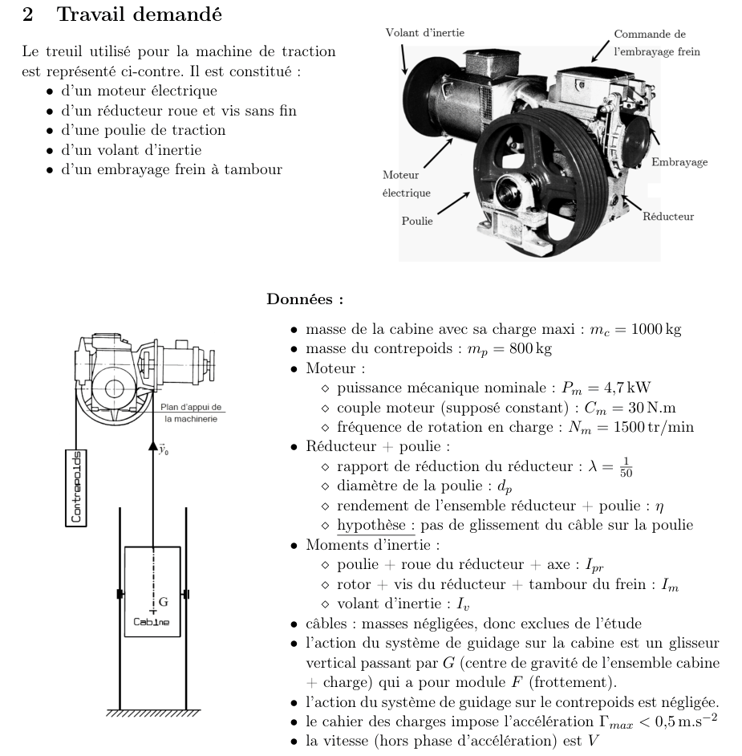
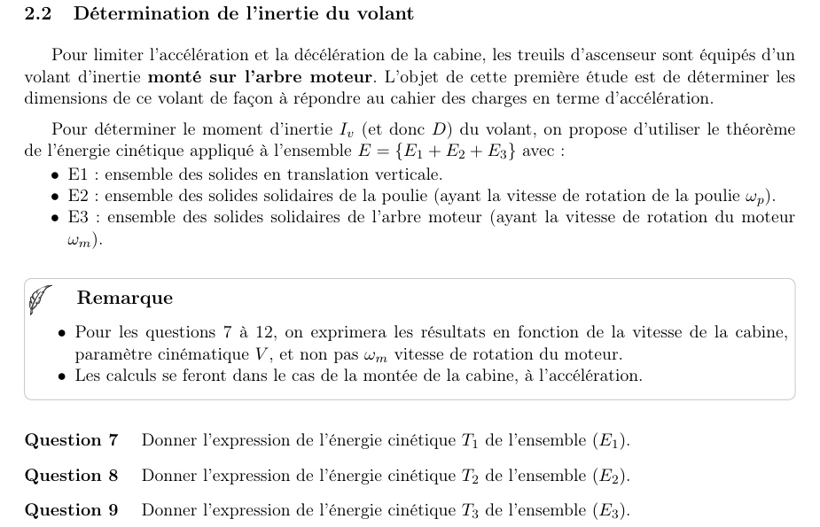
La chaîne à avoir en tête : moteur \(\omega_m\), réducteur de rapport \(\lambda=\omega_p/\omega_m=1/50\), poulie \(\omega_p\), câble, cabine à la vitesse V et contrepoids à la vitesse V en sens inverse.
Question 7 : énergie T₁ des solides en translation
La cabine et le contrepoids ont la même vitesse en valeur absolue.
Question 8 : énergie T₂ de l'arbre de la poulie
Étape 1 : rotation autour d'un axe fixe
\[T_2=\tfrac12 I_{pr}\,\omega_p^2\]Étape 2 : remplacer \(\omega_p\)
Question 9 : énergie T₃ de l'arbre moteur
Étape 1 : le volant est sur l'arbre moteur
\[T_3=\tfrac12(I_m+I_v)\,\omega_m^2\]Étape 2 : remplacer \(\omega_m\)
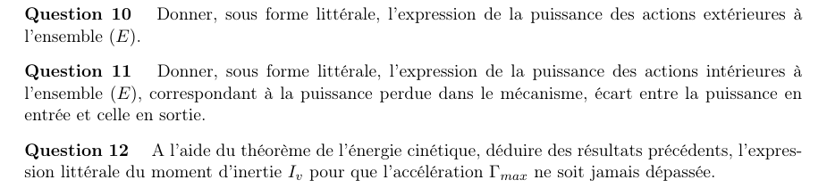
Question 10 : puissance des actions extérieures (montée de la cabine)
Étape 1 : une action, un signe
| Action | Puissance | Pourquoi ce signe |
|---|---|---|
| poids de la cabine | \(-m_c\,g\,V\) | la cabine monte, le poids freine |
| poids du contrepoids | \(+m_p\,g\,V\) | il descend, le poids aide |
| stator sur rotor | \(C_m\,\omega_m=\dfrac{2\,C_m V}{\lambda d_p}\) | moteur |
| guidage sur la cabine | \(-F\,V\) | frottement, il s'oppose |
Étape 2 : additionner et factoriser par V
Question 11 : puissance des actions intérieures (pertes)
Étape 1 : où sont les pertes ?
Les liaisons sont parfaites. Les pertes sont dans l'ensemble réducteur et poulie, de rendement \(\eta\).
Étape 2 : écrire la puissance perdue (négative)
Question 12 : inertie du volant
Étape 1 : énergie totale, en factorisant \(\tfrac12V^2\)
\[T_E=\tfrac12\Big[m_c+m_p+\dfrac{4}{d_p^2}\Big(I_{pr}+\dfrac{I_m+I_v}{\lambda^2}\Big)\Big]V^2\]Le crochet est la masse équivalente du système, notée \(M_{eq}\).
Étape 2 : somme des puissances (le terme en \(1-\eta\) se simplifie)
\[P_{ext}+P_{int}=\Big[(m_p-m_c)\,g-F+\dfrac{2\eta\,C_m}{\lambda d_p}\Big]V\]Étape 3 : appliquer le théorème et simplifier par V
\[M_{eq}\,\dot V=(m_p-m_c)\,g-F+\dfrac{2\eta\,C_m}{\lambda d_p}\]Étape 4 : imposer \(\dot V=\Gamma_{max}\) et isoler \(I_v\)